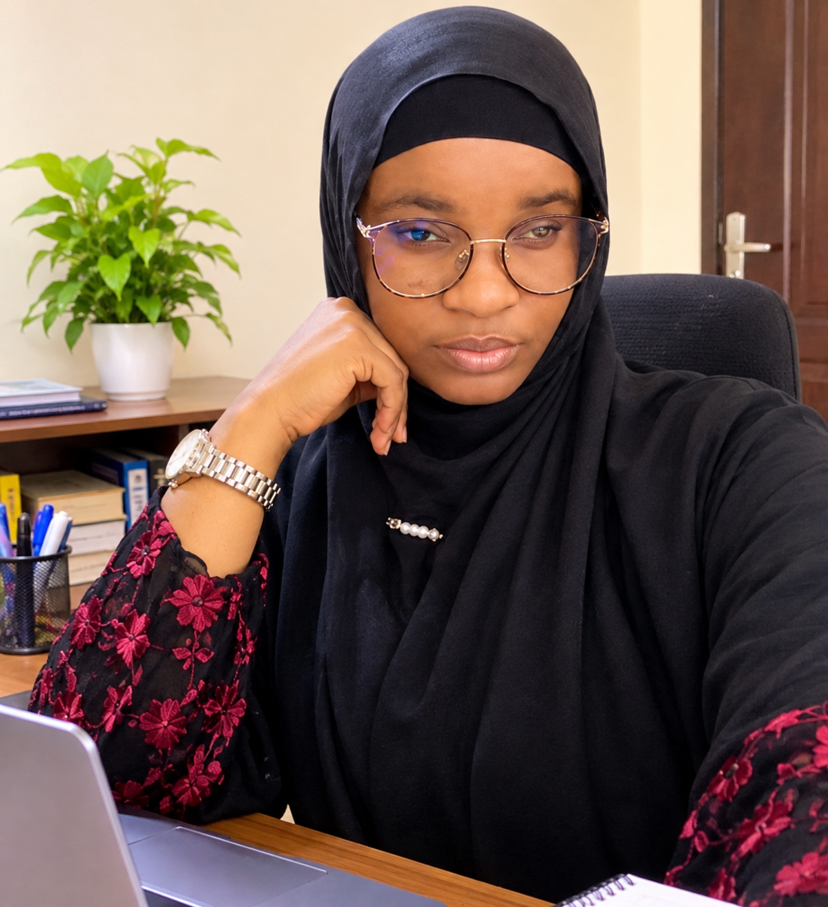

⌘
Software Development
Python, Django, web development, database-backed applications and practical digital products.
I bring together technology, education, human resource management and entrepreneurship to solve practical problems, support people and build meaningful solutions.

A multidisciplinary professional with interests and experience spanning learning, technology, business and people development.
I’m Zainab Olatunji, an educator, CHRP, software developer, virtual assistant and entrepreneur. I enjoy learning, building useful digital solutions, supporting organised workflows and helping people and businesses move forward.
My work reflects a blend of analytical thinking, communication, problem-solving and a practical, service-oriented mindset.
Curiosity and continuous learning
Integrity and professional responsibility
Clear communication and dependable support
Technology that solves real problems
Knowledge, service and sustainable impact
A broad skill set across digital development, administration, education and business operations.
Python, Django, web development, database-backed applications and practical digital products.
Administrative support, online research, organisation, documentation and digital task coordination.
CHRP professional background and an interest in people management and workplace development.
Educational management, teaching, learning support and knowledge sharing.
Research development, academic writing and evidence-informed problem solving.
Entrepreneurship, service operations, customer-focused thinking and business improvement.
Practical work that reflects my interest in building, managing and improving services.
A business management platform designed to help businesses manage customers, services, quotations, invoices, receipts, payments and reports.
A professional cleaning and sanitation business serving residential, office and commercial cleaning needs.
Developing a professional practice across virtual assistance, online research, documentation and organised business support.
Creator of ZeeBiz Manager, a Django-based business management application.
Offering a growing skill set in administrative, research and digital support.
Professional development in human resource management and people-focused practice.
Academic background in Educational Management, with an interest in teaching, learning and educational development.
Founder of ELITEZ Integrated Services, a cleaning and sanitation business.
Economics Option · Ekiti State University
Chartered Human Resource Professional credential.
Technology, entrepreneurship, research and professional learning.
Research and doctoral study remain important parts of my academic journey.
For professional opportunities, collaborations, project enquiries or business conversations, feel free to get in touch.
Remote and flexible professional opportunities
Software and digital projects
Virtual assistance and administrative support
Education, research and professional collaborations